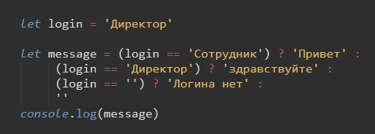

Условный (тернарный) оператор - единственный оператор в JavaScript, принимающий три операнда. Он часто используется в качестве укороченного варианта условного оператора if.
условие ? выражение1 : выражение2
Пример:
Пример вложенных нескольких операторов "?"
Т.е. в самом конце оязательно должно быть : ''
сравнивает выражение со случаями, перечисленными внутри неё, а затем выполняет соответствующие инструкции
switch (передаваемый объект) {
case value1: Здесь выполняются инструкции, если результат выражения равен value1
case value2: Здесь выполняются инструкции, если результат выражения равен value2
default: Здесь находятся инструкции, которые выполняются при отсутствии соответствующего значения
пример
Switch проверяет на строгое равенство, т.е. без приведения типов, это значит что 5 != '5'
Этот способ используется если на несколько разных кейсов нам нужно выполнить один и тот же код: